3. Tutorial 3
3.1. Purpose
The purpose of this third tutorial is to go into the more advanced functionalities of the Geospatial Microplanning Toolkit (GMT). Previous knowledge is required - you are expected to have worked through Tutorial 1 and Tutorial 2 and that you understand all concepts introduced there.
This tutorial will follow the same principle as the previous two, and additionally we will introduce the following:
Health facilities not considered for routine immunization
Subplace names
Settlement splitting
Settlement merging
Uninhabited settlements
Using the algorithm to populate the microplan
3.2. Let’s Get Started!
3.2.1. Preparation
Obtain the data for Ward “Oke-Ode 3” in LGA “Ifelodun” in the State “Kwara” and take the data offline. Navigate to the health facility list. If any of those steps pose trouble, consult the steps in Tutorial 1.
3.2.2. Review the Health Facility list
3.2.2.1. Health facilities not performing RI
In our current Ward, we have four health facilities. Let’s assume that not all of those health facilities are relevant for routine immunization. In fact, the health facility “Alabe Oja Primary Health Center” is not performing routine immunization and should thus not be considered for our microplan.
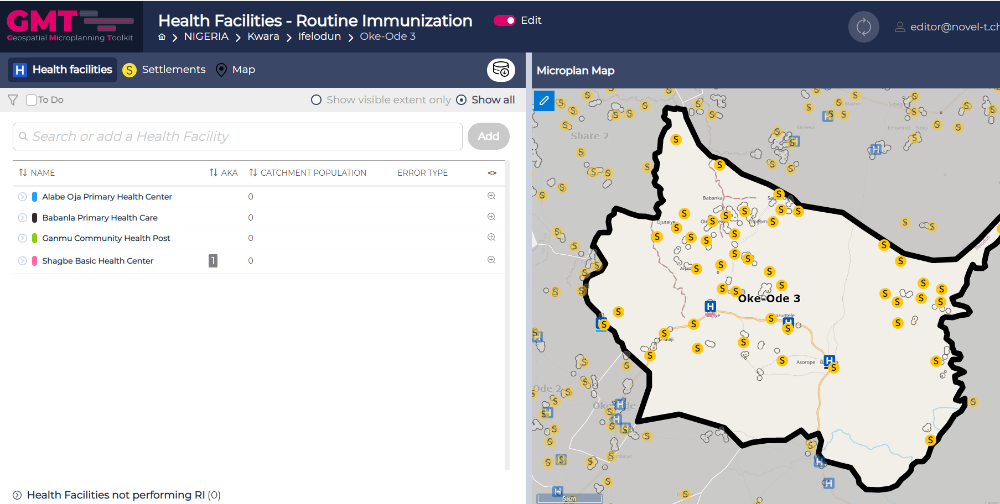
We can mark the health facility as such: enter the health facility detail tab and choose “No Service” in the menu “Services”. Note that the catchment tab is no longer available for this health facility.
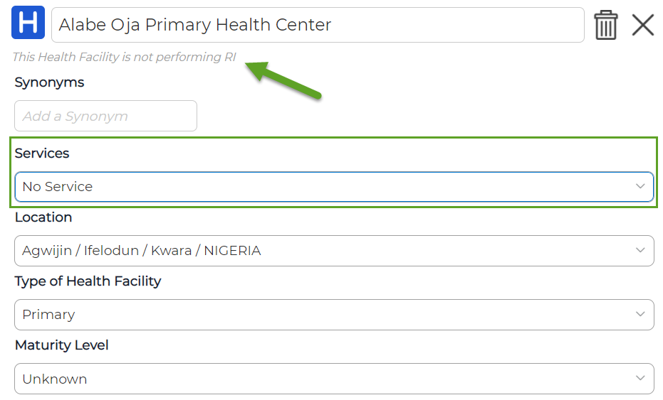
Navigate back to the health facility list and note that this health facility is now listed in the section “Health Facilities not performing RI” at the bottom of the screen.
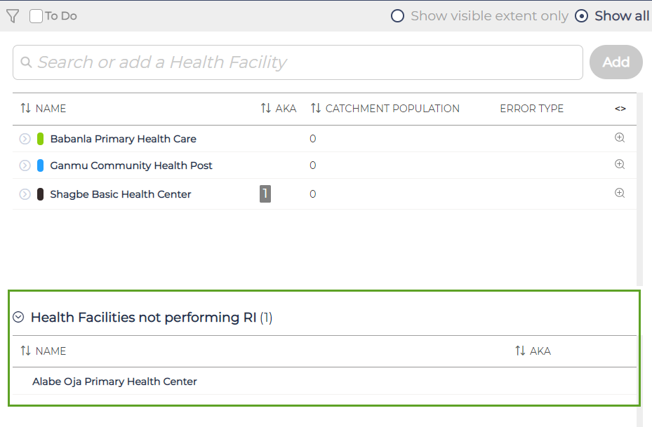
Let’s assume that all the other three health facilities are in order as such.
3.2.3. Review the Settlement list
3.2.3.1. Subplace Names
Let’s take a look at the settlement list.
Search for “Gaa Olowolagba”. You’ll see that there is a settlement with that name. You will also see that it is followed by “sub 3”. To understand what that means, zoom first to that settlement on the map.
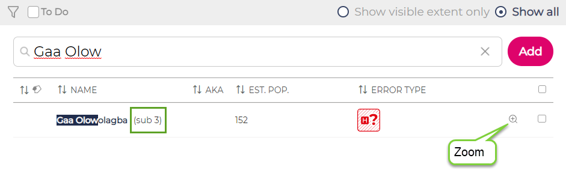
You will see that there is a settlement name assigned to the outline of the settlement. The outline of the settlement is shown in the legend as “Settlements - Shapes”, while the name of a settlement is shown in the legend as “Settlements - Names”. Those can be toggled on or off.
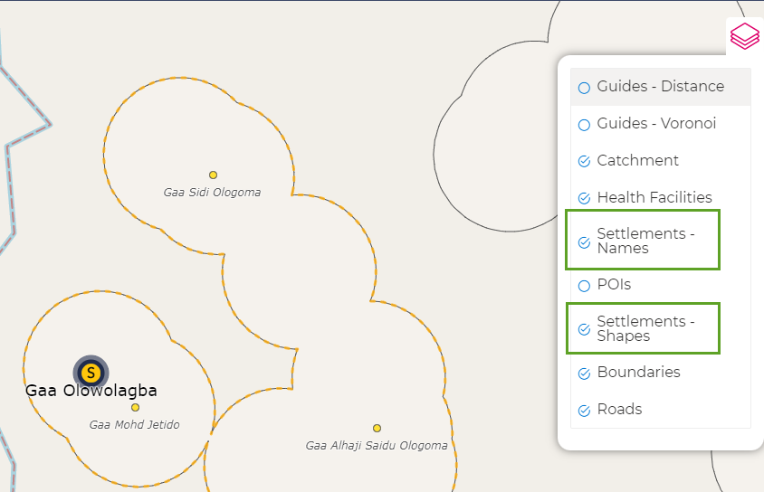
You will note that there is one settlement name “Gaa Olowolagba” associated with a shape. You can underlie the satellite imagery if you have connectivity. You will see that within this settlement there are three other names. Those are called “Subplace Names”. If you click on the “sub 3” next to the settlement name, you will see those places listed.
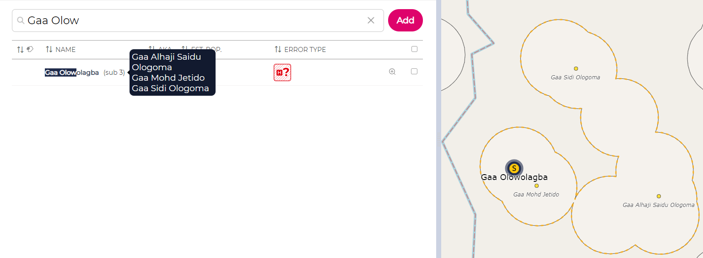
Note that you can search for those names in the settlement list and this will highlight the number if the search term is found.
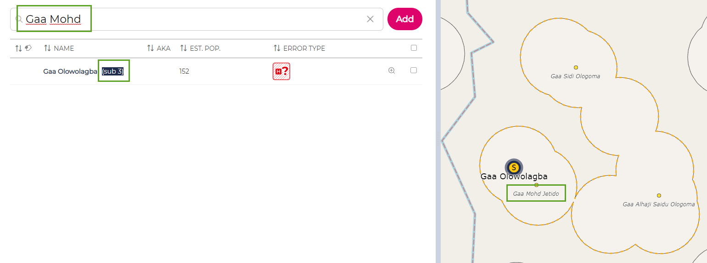
If you want to understand more about subplace names, you can go to Settlements.
3.2.3.2. Splitting a settlement
Without going into detail here, buildings have been aggregated into settlements with certain rules. If you want to understand this better, you can consult Background.
These settlements may not always correspond to the actual outline of a settlement. Sometimes a settlement may have many subplace names which are actually all individual settlements. For the sake of microplanning, you may not need to actually split a settlement with many subplace names into individual settlements, as long as all of the places are part of the same health facility catchment and reached using the same routine immunization strategy. However, you may wish to split them into individual settlements for correctness nevertheless.
In our case, let’s imagine that in fact, “Gaa Mohd Jetido” and “Gaa Olowolagba” are part of the catchment of “Shagbe Basic Health Center”, while “Gaa Alhaji Saidu Ologoma” and “Gaa Sidi Ologoma” are part of the catchment of “Ganmu Community Health Post”. Thus, we will have to split the settlements accordingly.
To do so, choose the “Select” icon on the map.
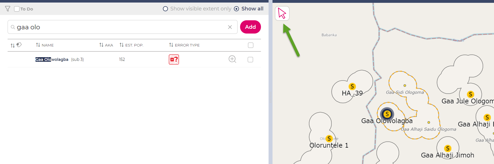
With the tool active, select the settlement we aim to split. Click now on the scissor icon.
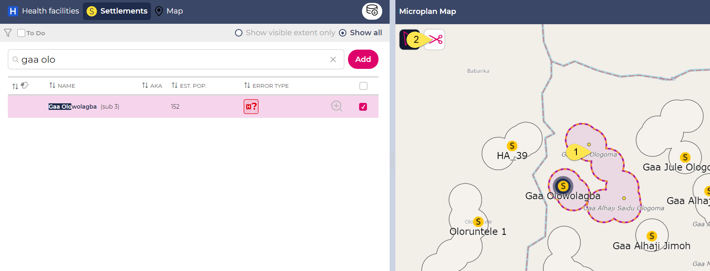
Now, you want to split the settlement by drawing a polygon. Note that we will have to cut our settlement several times. First, we will isolate “Gaa Olowolagba” as a single settlement. Be careful to include the full shape, otherwise some parts will still belong to the other cut part. Finish the polygon by double-clicking. If you are not happy with your polygon and you have not split yet, you can abort the operation by clicking on the scissor again.
It should look something like that:
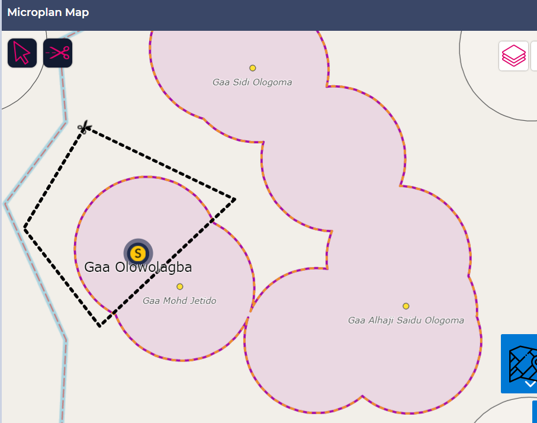
Not like this - include the full shape:
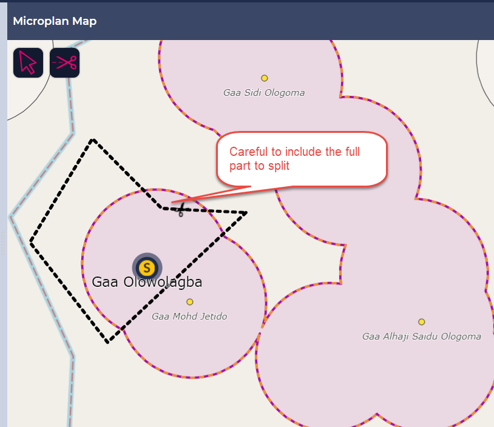
Not like that - avoid intersections:
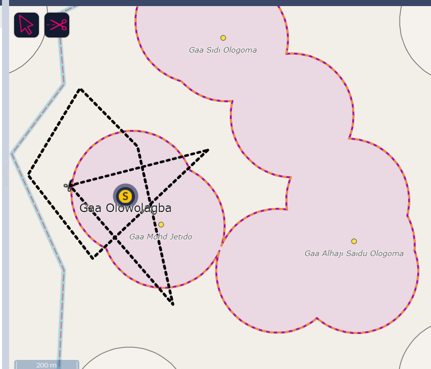
After you finished the operation, you can see that one of the subplace names has now been promoted to a primary name in the list - it is in this case “Gaa Alahaji Saidu Ologoma”. Note that this contains now still two subplace names. If you see it on the map but not on the list on the left, you can choose “Show visible extent only” to filter the list to the visible extent of the map only.
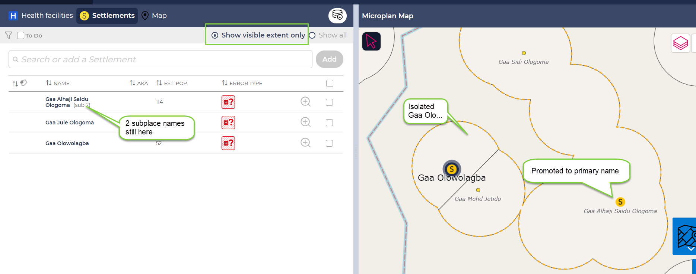
Next, we want to isolate “Gaa Mohd Jetido”. Repeat the procedure above to split it. Repeat this also for the remaining last subplace name.
As a result, we have now no longer one “Gaa Olowolagba” with three subplace names but rather four individual settlements. You can split any type of settlement this way.
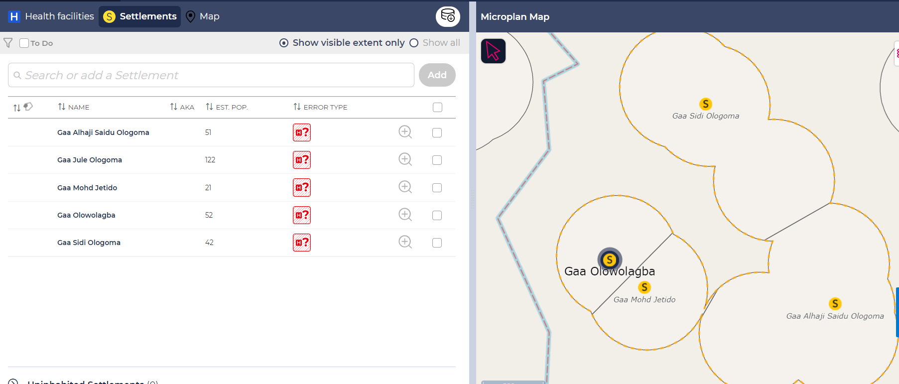
3.2.3.3. Merging settlements
In a similar fashion that some of the buildings have not been split properly into settlements through the automated processing, there may be cases where buildings have not been assigned to the same settlement, even though they are part of the same settlement. In that case, we would like to merge settlements.
Let’s take a look at HA_31, HA_30 and HA_28. Those are all machine generated names. Let’s imagine that we had flagged those places for field data collection, as described in Tutorial 2. After coming back from the field data collection, we know that those are all part of “Gaa Mila Ikba”.
We could rename all three to that name. However, that would lead to duplicates in the settlement list. That’s not good practice. Instead, we will first rename HA_30 to “Gaa Mila Ikba”. Click on HA_30 - be sure to no longer have the “select mode” on the map active, if you want to click on the settlement on the map to access the settlement. Rename it as we have seen in Tutorial 1.
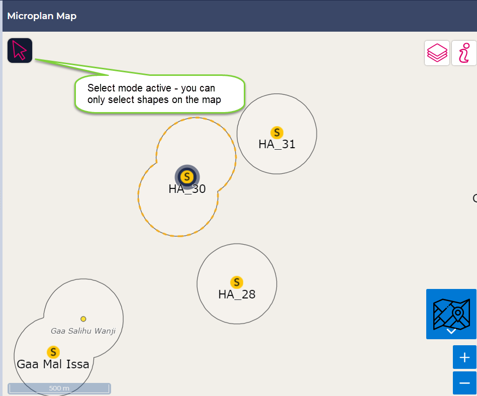
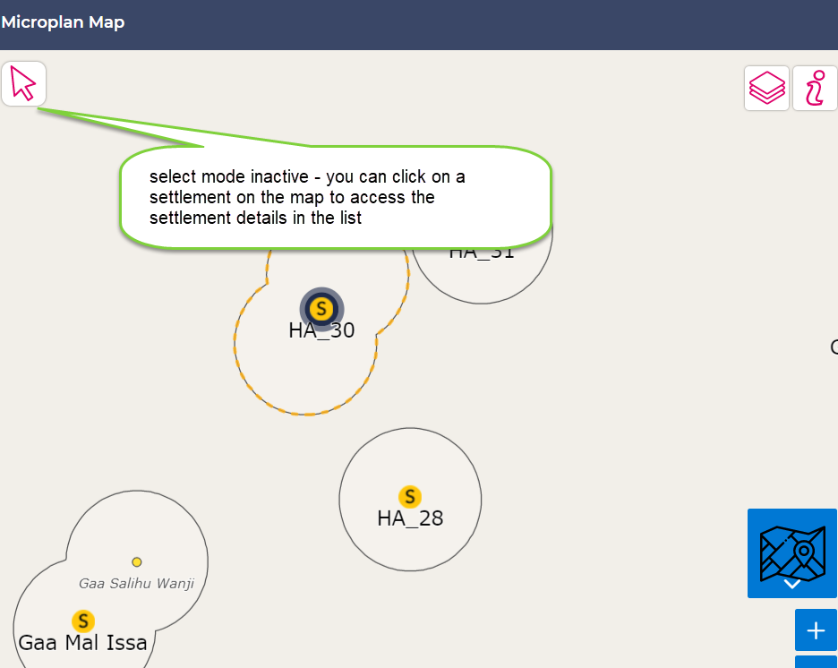
Now, we will merge HA_31 and HA_28 with it. Click on the “Select” icon on the map. Select the three settlements - observe that the scissor icon has transformed itself. Once you selected the three settlements, you can merge them.
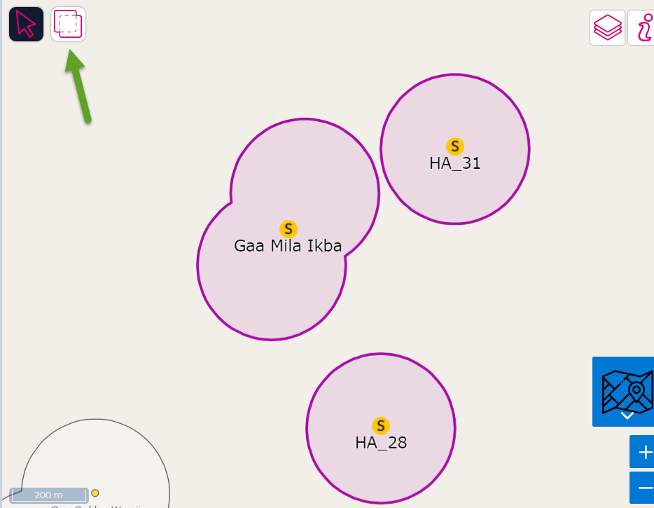
After the merging, you are directed to another page that will allow you to decide what name should remain after the merging. Since you merged three settlements which each had a name, you need to decide what name you would like to choose as the one that will be shown on the list. Let’s make the machine generated names sub place names (click on the according icon). That way, those names are no longer visible in the list.
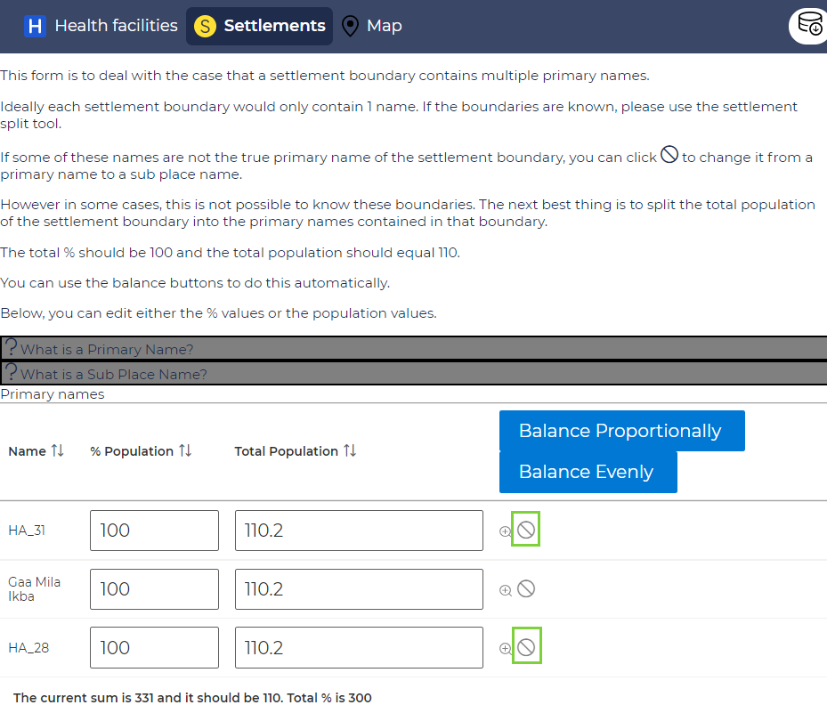
3.2.3.4. Uninhabited settlements
It may well be that in some cases, a settlement no longer exists or that the buildings are not inhabited. For such cases, there is the possibility to flag a settlement as uninhabited - and it would not be considered for microplanning.
Let’s imagine “Gaa Jatto” is abandoned. Go to the settlement detail tab of it and check the box “Uninhabited”. Alternatively, you could set the population to 0. You can now give a reason why the settlement is uninhabited.
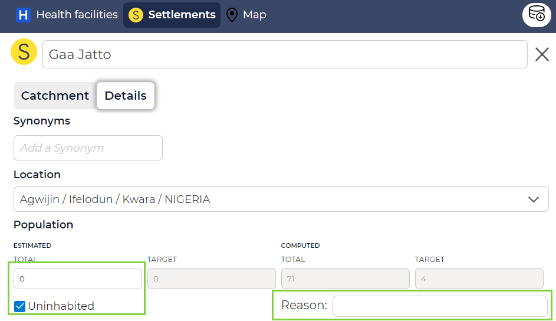
If you go back to the settlement list, you will see that the settlement now appears under “Uninhabited Settlements” at the bottom of the screen.
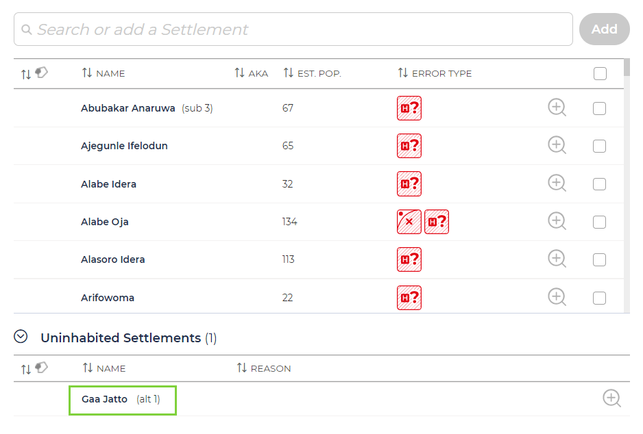
Even though there are still a couple of errors outstanding (for instance, there remain many settlements that have machine generated names), let’s move on. If this were a real case, you should rename all of those settlements with the correct names.
3.2.4. Perform Microplanning
We have already seen how to perform microplanning from within the health facility catchment tab. This time, we will use a pre-generated microplan to make our life easy.
Click on the “Map” tab. This tab contains a microplan that has already been generated based on distance according to the following rules: All inhabited settlements within 2km of a health facility that is performing routine immunization have been assigned to that health facility with a “Fixed-Post” strategy. All settlements that are further away than 2km from a health facility are assigned to its closest health facility that is performing routine immunization, with either a “Outreach” (2-5km) or “Mobile” (above 5km) strategy.
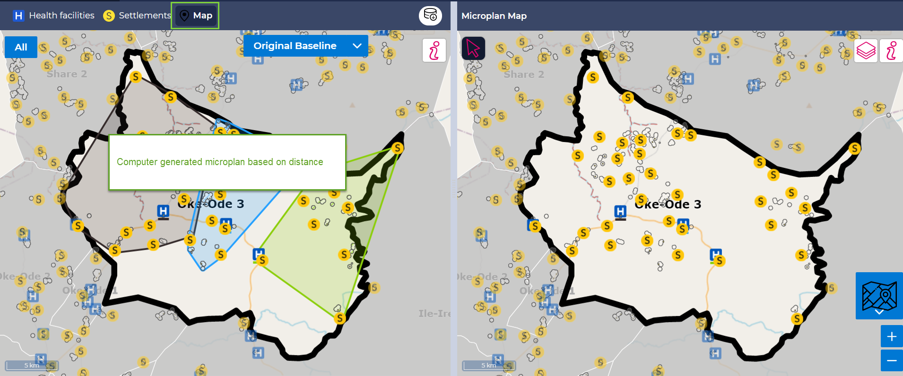
You can click on a health facility on the left. You will see a summary of the catchment for that health facility. You can also select “All” to select all health facilities. Click on “Add to Microplan” to move the selected catchments to your microplan.
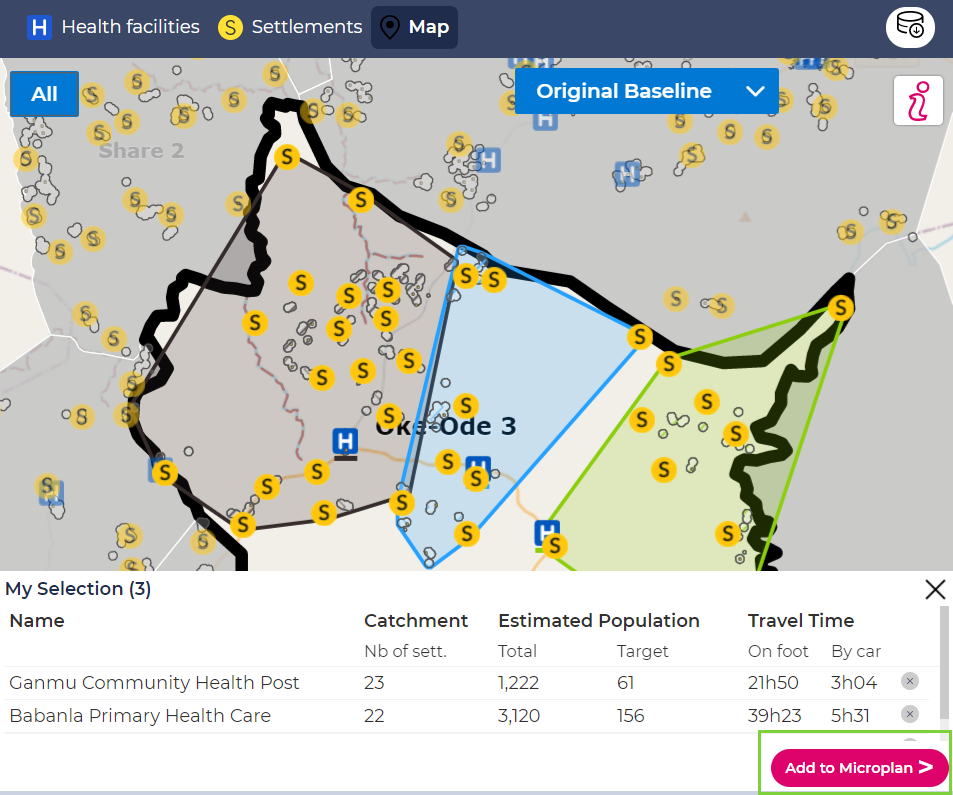
Using this strategy, you have automatically created all catchments, including all settlements that are in the settlement list for that Ward.
You can review the catchments again in the settlement or health facility catchment details.
Important
You reached the end of Tutorial 3!